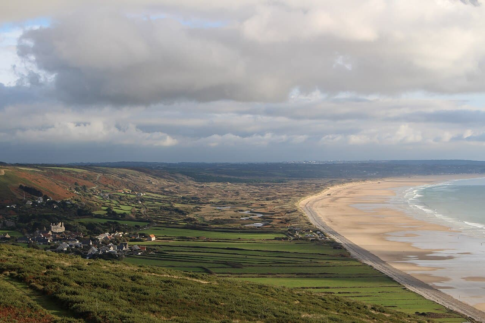

Vauville
Manche, France · surf, bodyboard, kitesurf

Longue baie sauvage du Cotentin face au nez de Jobourg : houle puissante et vent, pour surfeurs et kiteurs aguerris.
- Lieu
- Manche, France
- Niveau
- Intermédiaire
- Activités
- surf, bodyboard, kitesurf
- Type d'eau
- Mer / océan
- Coordonnées
- 49.63, -1.83 (position approximative du secteur)
Dangers à connaître
- Courants violents (raz Blanchard proche).
- Spot exposé, conditions changeantes.
Le conseil d'Ocean Buddy
Site exposé : vérifie bien la météo et n'y va pas seul.
Ouvrir dans Ocean Buddy Télécharger sur l'App Store
Source : Description historique Ocean Buddy · vérification externe en attente.